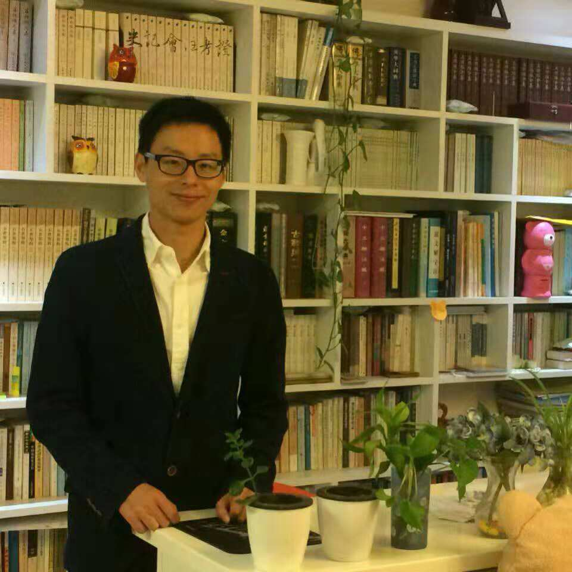

Welcome to my personal homepage!

I received Ph.D. degree from State Key Laboratory of Fluid Power and Mechatronic Systems, Zhejiang University in 2013.
I am a lecturer in China Jiliang University, and now I'm working as a visiting scholar at Dresden Applied Science University, Germany (2022.03--2023.03).
Email: caosongxiao@cjlu.edu.cn/songxiao.cao@htw-dresden.de
[1] Huang, X.,Cao, S X. et al., Improved Fully Convolutional Siamese Networks for Visual Object Tracking Based on Response Behaviour Analysis. Sensors, 2022. 22(17): p. 6550.
[2] Cao S X, Shu Z C, Xu Z P, et al. Character segmentation and restoration of Qin-Han bamboo slips using local auto-focus thresholding method[J]. Multimedia Tools and Applications, 2022, 81(6):8199-8213.
[3] Tang, J., Cao, S X., Chen, J., Song, T., Xu, Z., Zhou, Q., & Jiang, Q.. Visual Scratch Defect Detection System of Aluminum Flat Tube Based on Cubic Bezier Curve Fitting Using Linear Scan Camera[J]. Applied Sciences, 2022,12(12), 6049.
[4] Gao, R.,Zhou Q J, CAO S X, et al., An Algorithm for Calculating Apple Picking Direction Based on 3D Vision. Agriculture, 2022. 12(8): p. 1170.
[5] SHU Z, CAO S X, JIANG Q et al. Pairwise Registration Algorithm for Large-Scale Planar Point Cloud Used in Flatness Measurement [J]. Sensors, 2021, 21(14): 4860.
[6] CAO S X, WANG X. Visual contour tracking based on inner-contour model particle filter under complex background [J]. EURASIP Journal on Image and Video Processing, 2019, 2019(1):
[7] CAO S X, WANG X. Real-time dynamic gesture recognition and hand servo tracking using PTZ camera [J]. Multimedia Tools and Applications, 2019, 78(19): 27403-24.
[8] CAO S X, WANG X, XIANG K. Visual object tracking based on Motion-Adaptive Particle Filter under complex dynamics [J]. EURASIP Journal on Image and Video Processing, 2017, 2017(
[9] CAO S X, WANG X, KE X. Visual Object Servo Tracking Based on the Particle Filter Method Using a Pan-Tilt-Zoom Camera [J]. International Journal of Advanced Robotic Systems, 2017, 9(4):
[10] ZHOU B, WANG X, CAO S X, et al. Optimal bi-directional seam carving for compressibility-aware image retargeting [J]. Journal of Visual Communication and Image Representation, 2016, 41(21-30.
[11] ZHAO H, XIANG K, CAO S X, et al. Random walks colour histogram modification for human tracking [J]. IET Computer Vision, 2016,
[12] ZHAO, HOUQIANG, XIANG, et al. Robust visual tracking via CAMShift and structural local sparse appearance model [J]. Journal of visual communication & image representation, 2016,
[13] WU C W, ZHAO H Q, CAO S X. Attention shift-based multiple saliency object segmentation [J]. Journal of Electronic Imaging, 2016, 25(5): 053009.
[14] KE X, WANG X, CAO ,S et al. A new approach for real-time segmenting moving objects under cluttered background; proceedings of the Electrical & Electronics Engineering, F, 2012 [C].
[15] CAO S X, WANG X Y, FU X J, et al. Servo Tracking of Moving Object Based on Particle Filter [J]. Advanced Materials Research, 2011, 271-273(1130-5.
[16] FU X, WANG X, CAO S, et al. Design and dynamic analysis of a micro three-axis turntable; proceedings of the International Conference on Fluid Power Transmission & Control, F, 2009 [C].
[17] CAO S, WANG X. Servo tracking of muti-color moving target based on target reference histogram update; proceedings of the ICFP 2009;International conference on fluid power transmission and control, F, 2009 [C].
(1) Autonomous driving
a. Path tracking
Autonomous driving based on BMW-i3 at the test field of MechLab of Dresden University of Applied Science, Germany.
b. Auto parking
Due to the large size of the video file, please view it by visiting the following link:
Google drive:
https://drive.google.com/file/d/1itVc8Wtav4tNQVWKGNVngvElWu60BWCA/view?usp=sharing
Baidu Yunpan:
link：https://pan.baidu.com/s/1glQGZhg5ogbVTqZBk54GvA?pwd=yrpg
code：yrpg
(2) Contour tracking
Contour tracking under complex dynamic background
(3) Teacher and student tracking in the classroom
Teacher tracking in the classroom use a PTZ camera, all the algorithms are implented in the DSP.
Students tracking in the classroom use a PTZ camera, all the algorithms are implented in the DSP.
(4) Auto Zooming tracking using a PTZ camera
Auto zooming tracking using a PTZ camera, all the algorithms are implented in the DSP.
(5) 3D vision guide
3D vision detection and guiding with a FAUNC Robot.
Footer © 2022 GitHub, Inc. Footer navigation Terms Privacy Security Status Docs Contact GitHub Pricing API Training Blog About